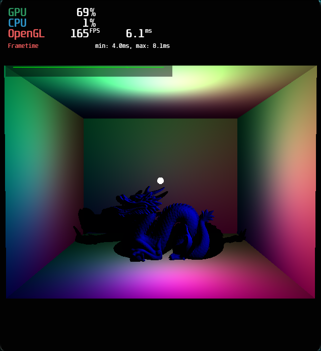
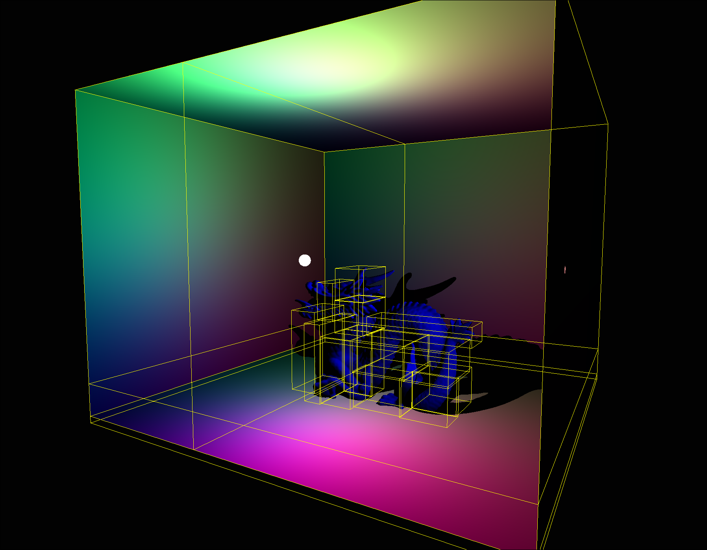

Work
Parallel MPM Gravity Sim
Built a real-time 2D Material Point Method fluid simulation in C++20 with OpenGL rendering, using APIC-style particle-grid transfers and blended PIC/FLIP velocity updates for dense, interactive particle motion.
Implemented a high-resolution grid solver with parallel tiled particle binning, parallelized P2G/ G2P passes, pressure and density handling, buoyancy, boundary damping, and stability checks to support large particle counts while keeping the simulation responsive.
Added particle-sourced pseudo-gravity cascades, temperature and density-based material spawning, constant time Radiance Cascades global illumination, and frame timing instrumentation to make the simulation easier to debug, tune, and extend.
As of June 11th 2026, Radiance Cascades have been moved to being solved through compute shaders allowing for significantly increased fidelity of the radiance field.
Future plans include expanding temperature-driven phase behavior, 3D simulation, and additional rendering techniques.
"Wind Tunnel" Simulation (C++ / OpenGL)
Built a 2D fluid simulation in C++17 with OpenGL rendering and an SPH-style particle solver tuned for dense, interactive flow fields. The project currently targets large particle counts and uses a spatial partitioning grid to keep local neighbor lookups quick while updating density, pressure, viscosity, and vorticity-driven motion.
Added an ImGui control surface for live parameter tuning and used profiling plus stability audits to identify bottlenecks in the solver and render path, including hot neighbor loops and large per-frame buffer uploads. The result is a project focused not just on visuals, but on making a high-particle-count simulation debuggable and performant.
Future plans include testing performance gains with compute shaders and also expanding to 3d and experimenting with various rendering techniques
Realtime Raytracer
Real-time GPU raytracer built in C++17 with OpenGL 4.3 compute shaders. The CPU pipeline loads OBJ meshes, packs scene data into SSBOs, and builds a BVH using recursive median splits; the GPU handles per-pixel ray generation, BVH traversal, triangle intersections, shadow checks, and lighting before presenting through a fullscreen pass. Includes an interactive BVH wireframe visualizer for practical debugging of acceleration-structure behavior.


Particle Engine (C++ / OpenGL)
Built a real-time 2D particle simulation in C++17 and OpenGL 3.3 that renders up to 22,000 particles as GPU point sprites. The simulation updates particle motion with gravity, wall constraints, and optimized particle-particle collisions using a uniform grid to keep neighbor checks local and fast.
Implemented a shader-based rendering path with custom vertex and fragment shaders, plus image-driven particle coloring from sampled RGBA textures for stylized output. Also added binary persistence to save and reload settled particle positions across runs.
Computer Vision Project
Built a real-time kart racing analytics system in Python using OpenCV, Kalman filtering, and Hungarian data association. The pipeline tracks multiple karts from drone footage, estimates speed, computes sector/lap timing from line crossings, visualizes trajectories live, and exports lap telemetry to CSV for post-race analysis.
Lap Logic - Sim Racing Telemetry Agent Report
View Lap Logic Report on Canva
Project utilizing Python libraries like Numpy and Pandas to perform analysis of data collected from real time gameplay.